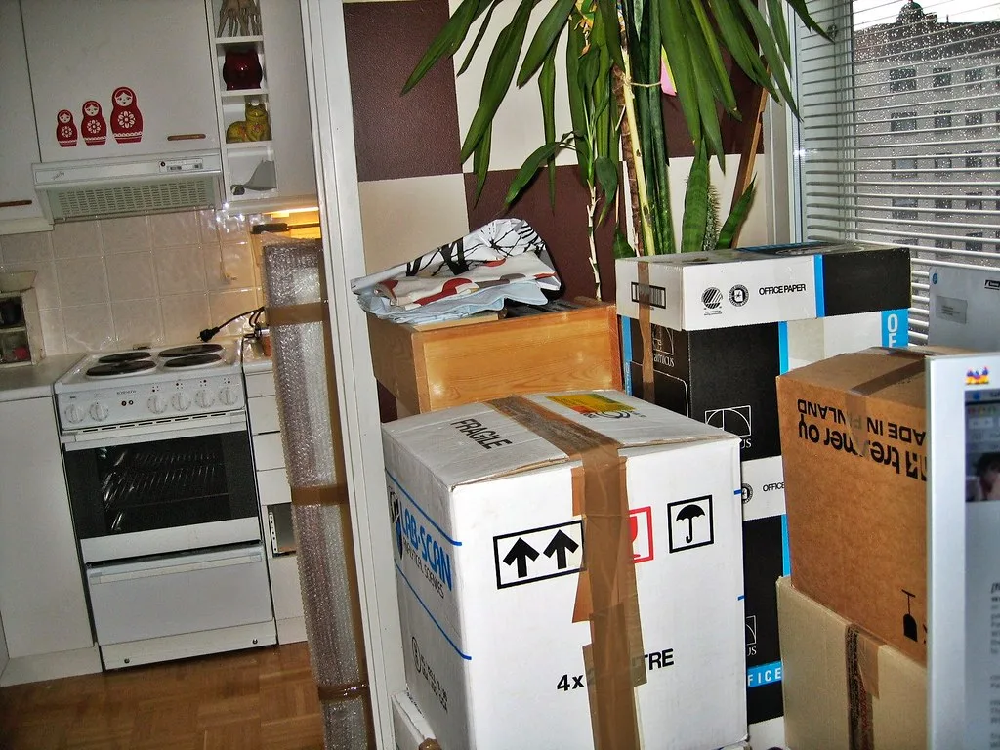
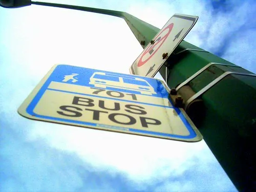

구직 중 · 2026년 상반기 입사 가능 · 서울 출근 가능
프론트엔드를 배운 지 11개월째입니다. 프로젝트마다 무엇을 하려다 어디서 막혔고 어떻게 넘겼는지, 다음엔 뭘 다르게 할지까지 함께 적었습니다. 잘된 것만 적은 포트폴리오는 저도 잘 안 믿기더라고요.

이사 견적 비교 React · TypeScript · Vite 전 직장에서 매번 엑셀로 하던 일을 화면으로 옮겨 봤습니다. ↗ 링크 읽은 책 기록장 React · IndexedDB · PWA 인터넷이 끊겨도 기록이 남아야 해서 오프라인부터 만들었습니다. ↗ 링크
버스 도착 알림 Vanilla JS · 공공 API 정류장 하나만 저장해 두고 보는 가벼운 화면입니다. ↗ 링크 접근성 다시 만들기 HTML · CSS · ARIA 부트캠프 때 만든 첫 페이지를 스크린리더로 다시 만들었습니다. ↗ 링크혼자 만들었지만 협업을 염두에 두고 습관을 들였습니다.
커밋 메시지는 무엇을 왜 바꿨는지 한 줄로 씁니다. 브랜치는 기능 단위로 자르고, 머지 전에 스스로 한 번 리뷰합니다.
README에는 실행 방법과 화면 캡처를 꼭 넣습니다. 남이 클론해서 3분 안에 돌리지 못하면 실패로 봅니다.
프로젝트 상세에도 적어 두었지만, 특히 오래 걸렸던 일곱 가지는 따로 모았습니다. 문제 → 접근 → 결과 순으로 씁니다.
딴 것과 준비 중인 것을 구분해 적었습니다.
엑셀 매크로를 짜다가 프로그래밍에 관심이 생겼습니다. 반복되는 일을 줄이는 재미가 시작이었습니다.
처음 두 달은 자바스크립트 문법에서 계속 막혔습니다. 포기하지 않은 게 유일한 자랑입니다.
팀 프로젝트에서 상태 관리를 맡았고, 여기서 처음 코드 리뷰를 받았습니다.
작은 걸 만들어 올립니다. 지금 열한 번째입니다. 막힌 날은 일지에 길게 적습니다.
리뷰를 주고받으며 일하고 싶습니다. 테스트 코드를 제대로 익히는 게 올해 목표입니다.
주니어 프론트엔드 자리를 찾고 있습니다. 인턴이나 계약직도 좋습니다.
코드 리뷰나 피드백만 주셔도 감사히 받겠습니다. 답장은 하루 안에 드립니다.